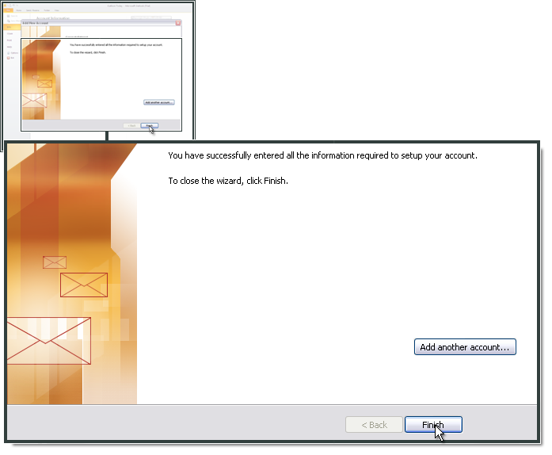

Microsoft Outlook 2010¶
Apri Outlook e seleziona File.

Fai clic su Add Account (Nuovo).

Spunta l’opzione Manually configure server settings or additional server types (Configura manualmente le impostazioni del server o i tipi di server aggiuntivi).
Fai clic su Next (Avanti).
Seleziona Internet E-mail (E-mail Internet).
Fai clic su Next (Avanti).
Inserisci il nome e l’indirizzo e-mail.
Seleziona IMAP come tipo di account.
Come Incoming mail server (IMAP) (Server della posta in entrata), inserisci imap.ewake.it. Come Outgoing mail server (SMTP) (Server della posta in uscita (SMTP)), inserisci smtp.ewake.it.
In Logon Information (Informazioni di accesso), inserisci l’indirizzo e-mail e la password.
Fai clic su More Settings (Altre impostazioni).

Seleziona Outgoing Server (Server in uscita), quindi My outgoing server (SMTP) requires authentication (Il server in uscita (SMTP) richiede l’autenticazione).

Seleziona Advanced (Avanzate). Come Incoming server (IMAP) (server della posta in entrata), inserisci 993 seleziona SSL. Per il Outgoing server (SMTP) (server della posta in uscita), indica 465 e seleziona SSL.
Fai clic su OK.
Fai clic su Finish (Fine).
